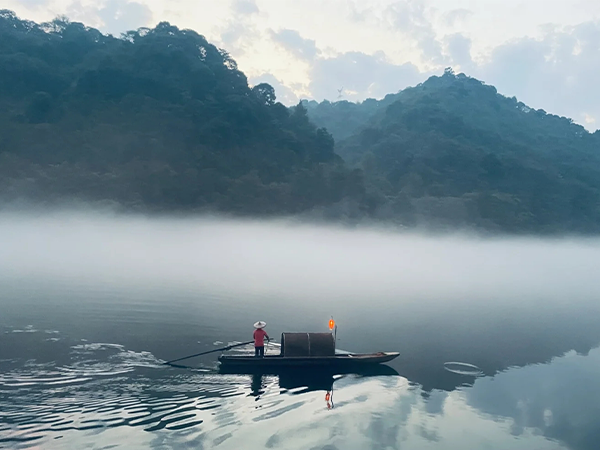
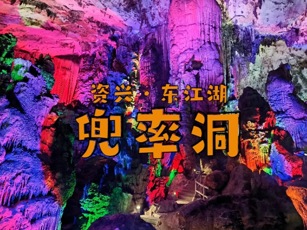

雾漫小东江
雾漫小东江位于风景区北面的主入口处，由上游的东江水电站和下游的东江水电站而成，为长约10公里的一条狭长平湖。
水质清澈明净，各项指标均达到了国家一级饮用水标准。
每年4—10月，每当旭日东升和夕阳西下，宛若一条玉带在峡谷中飘拂，整个小东江云蒸霞蔚，朦胧缥缈，置身其中，恍入仙境，被人誉为“中华奇景、宇宙奇观”。
近年来全国各地的摄影爱好者都来小东江摄影创作，反映雾漫小东江的作品多次获国内、外摄影大奖，小东江已成为世界著名的摄影创作胜地。
潇湘风情小镇——黄草镇
黄草镇境内气候宜人，自然资源丰富，盛产杉木、松木、楠竹，拥有红豆杉、银杏、澳洲桉树、景烈白兰等珍稀树种。
素有“江南水中镇、东江湖中花”之美誉，是国家5A级景区东江湖的核心景区，辖区内有惊险刺激的中国生态第一漂——“东江漂流”和神秘清幽的“沃水峡谷”。
黄草水陆交通互通，水上交通可直通东江大坝码头、长盈头码头、白廊码头，航线里程均在40公里内，境内盛产水果、生姜、板栗、鱼、冬笋、香菇、茶油、蜂蜜等土特产。

兜率灵岩
兜率岩形成于270年前的特大石灰岩溶洞。
它掩藏于东江湖中心岛──我国江南目前最大的内陆岛“兜率岛(6平方公里多)”南面峭壁下的兜率古庙内。
古庙始建于清乾隆51年(1796年)，距今已整整200年的历史。
宋朝谢岩的《兜率灵岩记》被采入《天下名山记》，联合国溶洞协会专家考察后誉之为“地下大自然的迷宫”、“天下第一洞”。
文人骚客们则赞之为“天下洞相似，此洞独不同”。
溶洞开放近10年，已接待游客百万人次，其中接待中央、省部级政界要员数千人次，海外游客数万人次。